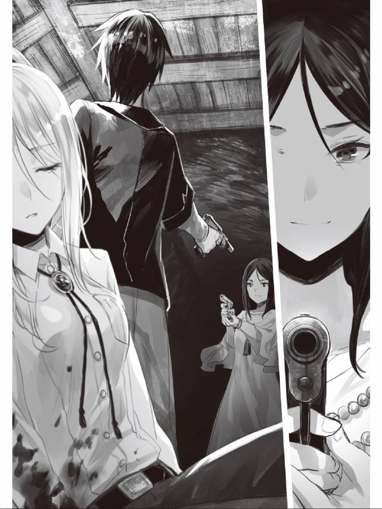
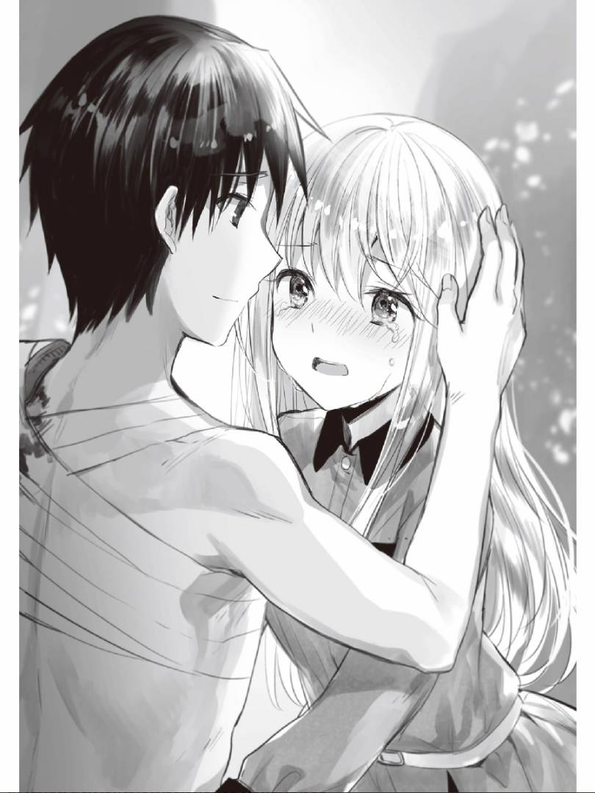

#57 谁是精神异常啊
接二连三的震动，悲鸣，逃跑的脚步声。
爆炸声与枪击声，强烈的光。
破坏与死亡。
「呜哇！？」
翠被剧烈的空气震动惊醒。此时窗外的天空一片漆黑，还是尚未天亮的时间，爆炸声与枪击声却响彻四方。翠赶紧跑到窗边想看看到底发生了什么，只见大街上扬起了灰色的浓烟。每次爆炸的冲击都会晃动翠的全身，全自动步枪的击发声不绝于耳，还有悲鸣与脚步声，怒吼与不自然的寂静。这与翠最初降临在这个异世界时是同样的感觉。
显然，雷托拉遭到了某种程度的袭击。
无论身处怎样的异世界，自保都是必须的。不管这是个多么权益主义的故事，但这里毕竟和翠从前所见有着些许差别，是个弱肉强食的世界。在这个与和平无缘的地方，为了死里逃生，自己必须行动起来。这时，翠的脑中回想起了什么。
「……」
在转生之初，从夏莉雅家开始转移的那个时候，尽管翠向用枪指着自己的士兵举起双手，表示不做抵抗，却还是被攻击了。连防弹背心和步枪都没有的翠可没有任何抵抗手段。
一切思考在攻击面前都显得软弱无力，翠连是什么人发动的攻击都不得而知。到底是「fentexoler（芬特肖雷）」？还是雷托拉的内部争斗？情况依旧不明。
总之，先逃跑吧。翠取出提包，将字典、笔记和笔都塞了进去。那张准备解读的留言条则夹在了字典里。事到如今，翠才记起自己并没有可以穿的衣服。昨天在床上随意脱下的衣服可不只是有点受潮，而是完全湿透的状态。夏莉雅、雷歇尔还有赫根法尔在这种情况下也不可能悠哉地给自己送来替换衣物。
（没办法，不管是裙子还是褶边罩衫，能够替换的衣物有什么就穿什么吧。）
翠一边祈祷着夏莉雅在这里放了衣服，一边打开了衣柜。只见里面的衣服整整齐齐的摆放着，而且全部都是男性服饰，没有一件女式的。令人吃惊的是，这很可能是夏莉雅为了不让翠为穿衣而困扰特地准备的。果然，与自己决裂并非夏莉雅自身的意愿。
翠换好衣服，带上行李，从玄关出去后，脑海中首先冒出了该往那边逃跑是好的疑问。到此为止，翠都没做过任何打算，只有逃跑这么一个模糊的概念。考虑到在房间窗边看见的那股升起的浓烟，还是先往出口方向逃跑方为上策。只是，升起浓烟的那边危险显而易见，可它的对面也未必是安全地带。不能排除雷托拉被完全包围的可能性。如果事已至此，那便无能为力了，反正横竖是个死，还是有搏一搏的价值的。
「啊……」
翠注意到有一个男人倒在了建筑前面。尽管他趴在地上，其惨状翠不得而知，但还是能看见他倒下的地方汇出了一滩鲜红的血泊。
一般来说，异世界转生作品的主人公此刻只要说一句「复活！」或「恢复！」就能使人死而复生，可翠从未在这个世界见识过一丝魔法。
既然出现了流血倒下的人，那说明这个地方可能发生过战斗。不过，目击尸体并没有使翠的内心产生触动，只让他感到「再这么磨蹭下去下一个就是自己了」。翠回想起了某人的言论，「丧生是尸，幸存为人」，对尸体区别对待是非常正常的，并非是翠出现了精神异常。
「……」
话说回来，既然发现了尸体，那便可以考虑从中获得某些情报。翠在看到尸体的胸前有把步枪后，便自然而然开始动手，试图将尸体郑重其事抱着的步枪拽出来。自己遇上敌对之人的时候，要是连一个对抗的手段都没有就太可悲了。虽然这近乎于强盗行径，但为了要保全自己，也是无可奈何。
由于步枪被趴在地上的男人给压住了，翠只好在拽出它的同时，注意不要挪动尸体。如果不小心把伏着尸体翻过来，看到了死者面容的话，自己可能会留下心理创伤的。
仅把枪抽出来还是远远不够的。它可不会像游戏和轻小说里的那样拥有无尽的子弹，有必要确认一下其中弹药的数量。按照之前夏莉雅教授射击时，自己学会的再填装要领，翠将弹夹卸下进行了确认，发现里面塞满了子弹。这样应该就没问题了。这个人似乎是在枪械满填装状态下死亡的，真是相当可怜啊。正如俗话所说，阎王要你三更死，绝不留人到五更。
接下来还需拾取在子弹耗尽时，替换用的满装弹夹，可是想要抽出他的战术皮带，必须与其进行身体的接触。尽管翠不想直接触碰，但也无可奈何，只得将他腰间的扣子解开并一口气把皮带抽出，于是，尸体便整个儿翻了过来。翠担心看见死者惨不忍睹的面容，迅速闭上了眼睛，将战术皮带抽出后随即转身，背对尸体。翠顺着发出的咔啦咔啦的声响的方向睁开眼睛，上面的东西似乎全都掉落出来了。也许还有留存了一些吧，翠心怀希望地看向手中，可是自己抓着的只有一条沾满鲜血的皮带。
「……」
自己这么做确实无情，一般人也肯定不会想要触摸尸体或是见识死者的面容，但是，在这种场合身不由己，即便不幸目睹，只要假装一无所知就没问题了。而且，如果不进行这样的心理安慰，翠自身就要崩坏了，这着实令人不寒而栗。
翠回过头去，快速捡起了落在自己身后数个相同型号的弹夹，可再怎么往口袋里塞也无法全部带走。翠意识到，除了使用浸满鲜血的战术皮带外别无他法。他忍着不适系上了皮带，将掉落在地的各种东西一一捡起收纳进去，在这段过程中，翠在无意中几乎看到了尸体的脸，他随即压下视线并摇了摇头。
翠捡了四个弹夹和带有安全栓的手榴弹一样的东西，还发现了用途不明的注射器，想着之后也许可以向知情人询问使用方法，他便将其一并收了起来。接着，他又看到了类似刀具和食物的东西，可近身战对于家里蹲来说是模仿不来的，而且装着粮食的塑料袋也因为水滴般的血液附着在表面，翠同样不想触碰。
把能拿的东西都拿（偷）走后，接下来翠就不得不为了摆脱现状而行动了。一旦被敌人发现，翠肯定会被他们前来干掉，落得和这个被枪杀的男人同样的下场。但是，他决不能死在这里，自己的身份，这个世界的情形，目前身处的地方为何战火纷飞，这些问题翠全都一无所知，他可不愿意死得不明不白。
「……恢复。」
将要离去之际，翠感到些许罪恶感，于是便保持背对的姿势，把手指向尸体的那边，也就是他的后方，一边想着「要是能够发动魔法的话……」，一边小声念叨着。反正这个世界不存在魔法，倒下的男人也不会复活，这种现实的冰冷反倒使翠感到了些许慰藉。但是，出乎翠的意料，他的耳边传来了微弱的呻吟。
「唉？」
「Plax...... （拜托……）fentexoler'i...... （把芬特肖雷……）」
翠向微弱的声源方向回过头去。直到刚才自己都认为是尸体的人竟然还保留着一点意识，他竭尽全力似乎想向自己传达着什么。但是，某种恐怖且原因不明的负面情绪使翠根本无法注视那双眼睛。为了不和他对上视线，翠只有一边看着他遍体鳞伤的身体，一边倾听他的声音。
「fentexoler'i...... （把芬特肖雷……）」
这种念头让翠有些无地自容，只得闭上了眼睛。这时，有什么东西落了下来下发出了「吧嗒」的声响，也许是手，或许是上半身，又可能是头。无论那是什么，此后便再无声息。按理说雷托拉正遭受着某些人的进攻，可现在却连蚊鸣一般的声音都没有传来，这真的令人毛骨悚然。不过，在害怕的同时，翠也明确了一点，对方是自己必须与之对峙的敌人。换句话说，包括雷托拉的市民、雷歇尔他们以及含冤入狱的翠，人人得而诛之的万恶之源便是芬特肖雷。
翠再次下定了决心，迈出了脚步。
#58 再会
在四处走动的几个小时里，翠一直在寻找可以出城的地方。
他在雷托拉的市内大致转了一圈，想起了之前看见印度前辈并追逐其幻影的事。不过，因为在那个时候翠一心一意忙着追赶，完全没有留意过城里的情况，只知道印象深刻的居住地到图书馆的路线上并没有岔路。
结果，翠没能在街垒上找到出入口的记号。他很清楚，越是频繁活动，越有可能被芬特肖雷发现，自己说不定会像那个托付遗言的男人一样变成一具尸体。
在长时间步行的过程中，翠发现自己没有携带之前从雷歇尔那里得到的地图，翠之前就是通过那张地图来确认通往图书馆的路径的。但是，翠在看了眼前的景象后，便也知道没有查看的必要了。
「真高啊……」
为了抵御外敌而建成的街垒不出所料有着无法轻易攀登的高度和构造。不过，街垒上天天都能看见哨兵。这样一来，自然便能想到这里设置着供哨兵每天上下的梯子类设施。就在翠想到这里准备往街垒方向靠近的时候，却发现对面有一个人影。是敌人吗？翠摆好了迎敌的姿势。但是，这个人影却并非敌人。
「Cenesti......？ （翠……？）」
「夏莉雅……」
日语的片假名的发音脱口而出。
夏莉雅独自一人呆立原地，看样子她什么武器都没拿就只身逃出来了。她向这边跑了过来，满脸都是愧疚的表情，不敢和自己对上视线。在这种反常的状况下形单影只的她一定非常害怕。尽管找到熟人使夏莉雅暂且安心了下来，可或许是因为对方是翠，她还是显得有些心神不宁。
「Co is niv pikij？ （你的头不痛吧？）」
「Cenesti...... （翠……） xace（谢谢）. Mi（我）es vynut.」
从语感来考虑，她说的应该是没事儿吧之类的话。寻常的问话换来的是正常的答复。翠竭力制造氛围，试图告知夏莉雅自己并没有恶意。
能用语言来表达想法自然再好不过，但态度和情感也很关键。也许有人认为这是无法用语言传达时的借口，可面对外国人，如果有使用肢体语言使其理解的气势，反而能更好地沟通，这说明态度和视觉情报非常重要。通过感情来传达想法是有其价值的，证据便是人类不只通过作为记号的语言来相互理解。
「Mal（那么）, co firlex tydiesto fal harmie？ （你知道该去哪儿吗？）」
夏莉雅点了点头，指向了街垒的旁边。由于隐蔽处很是昏暗，翠之前没能注意到，那里确实架设着梯子，这说明翠设想的没错。要是这里的哨兵全员都是肌肉饱满的彪形大汉，纯粹靠徒手爬上街垒的话，翠也就无能为力了。
既然有了梯子，那只要确认安全，应该就能一直逃到雷托拉外部了。比起在对规矩、礼仪、禁忌几乎一无所知的状态下独自逃脱，翠能和当地人的夏莉雅一同逃跑真是再好不过了。
「那么，走吧。」
在靠近街垒的那一瞬间，翠感到了危险的气息，他听见了街垒外侧传来了声响。这意味着……
「lulas mo――」
夏莉雅话说道一半的时候，震耳欲聋的冲击音传了过来，翠的眼前瞬间被灰色所遮蔽。在遭受了强烈的震动与暴风雨般的爆炸冲击波后，翠的心中有些焦躁，可还是打算弄清楚到底发生了什么。他将背着的步枪取下，单手架起，另一只手则紧紧地握住了夏莉雅的手，接着便向后退去。
既然街垒遭到爆破，说明这不是雷托拉人民和雷歇尔他们的行为。费尽辛苦建立起这座街垒的人们并没有这么做的理由。
这样一来，不出意外的话，对面就是翠他们的敌人————芬特肖雷。虽不知彼此的战力差距有多大，但是从这种从能对街垒进行爆破的战备来看，很难想象只是小规模的游击队。
当烟尘开始散去的时候，雪崩般的军靴声伴随着号令传了过来。敌人远不止一个两个，数量相当庞大。等视野恢复后，翠才了解到对方的位置和情况，与此同时明白了该如何应对。如果胡乱发动攻击则会暴露己方的位置，持有武器的翠一定会首当其冲。还是默不做声后退到某处建筑物内静观其变吧。
就在翠这样想着接连向后退去的时候，脚边却响起了某物折断的声音。士兵们一齐望向了这边。
「ni mol（有人）！」其中某人大喊了一句。
翠恨恨的看向脚边，发现了那根自己不幸踩中的树枝。只能硬着头皮上了，翠举起了步枪，向着敌兵瞄准射击，一名没反应过来的士兵瞬间便被击倒了。
第一次杀人并没有给翠带来罪恶感，瞬间的判断就会决定生死，翠没有功夫考虑多余的事了。他接连击倒迈过那位倒下的士兵继续前进的士兵们，这份能够确保自身安全的力量让翠感到自信与安心。
「怎么样，这就是主人公的————」
得意忘形的话语说到一半就戛然而止。
无论怎么扣动步枪的扳机都击发不出子弹了。是弹仓堵塞了，还是子弹用尽了，原因如何已经不重要了，形势在瞬间发生了变化。对方全都把枪口指向了这边。想要后退也为时已晚，翠已然在劫难逃，即将迎来被射杀的结局。
夏莉雅的表情看起来也很是害怕，向翠投去了求助的眼神。现在能够救她的人也只有翠自己了。就算是注定的死亡，人类也有战斗到最后一刻的权利。翠在此下定决心，直到临终也要把夏莉雅当作最重要的人。
（既然要死，那自己临死之前便演好这主人公……吧）
翠用力握住夏莉雅的手将她拉至身边，以倾体而上之势的将她紧紧抱住。与夏莉雅这样面对面紧贴的还是第一次。她小巧端庄的脸蛋出现在眼前，那双紧收的苍玉瞳孔流露出些许担心，一头银发就好像被砂砾胡乱刨过金属表面，只剩下暗淡的光泽，新品肥皂香味也顺势飘进了鼻腔。代替告别的话语，翠摸了摸自己赌上性命也要守护的对象的脑袋。
夏莉雅的脸瞬间变得通红，可在明白了翠想要做什么后又突然变得惨白。在此之后翠就没再看夏莉雅的表情了。再怎么垂死挣扎，扮演英雄，自己死亡的未来也已然注定，等待那一刻的到来还是会令人恐惧。
即便如此翠也要与这份恐惧抗争，为了拯救夏莉雅，弱小的自己要把力所能及的事做到极致。
那便是用自己的身体作为代价挡下攻击。
在听到数道枪声的瞬间，翠做好了慷慨赴死的准备。可经过了1秒， 10秒，自己的身体还是没有感到任何疼痛，难道是头部被击中的瞬间死亡？可翠还是能感觉到自己的身体，眼睛也能睁开。翠向着背后看去，却发现芬特肖雷的士兵们都已经血流如注地倒下了。究竟是谁干掉了他们？翠环顾四周，发现了得意洋洋挥手致意的雷歇尔，还有聚集在他后面众人的身姿。
「Fhjacafi tydiest fal fargextiol da! （大牌总是最后登场的！）」
也不知这句话是什么意思，不过他带着得意的表情所说的话在翠听来就是如此，再没有更合适的解释了。
#59 来自留言条
芬特肖雷的突袭被雷歇尔他们阻止了。可实际上，翠也不知道战斗是如何进行的，听别人的描述，似乎翠与夏莉雅再会的时候，外部的敌人就基本被歼灭了。
显而易见的是，敌方惨遭败北就是因为没有使用能让300人轻松战胜5000人，来自崇高传统文学作品集（轻小说）里流传下来的伟大战术「包围歼灭阵」。如果敌人将雷托拉团团围住，依次破坏街垒并入侵的话，即便这里做好了斯大林格勒保卫战般的准备，也会陷入哭嚎着逃窜的状况吧。幸亏芬特肖雷那边不存在有能力画出胜利绘卷的人物。
【ps：斯大林格勒保卫战（1942.06.28——1943.02.02）第二次世界大战中纳粹德国对苏联南部城市斯大林格勒而发动的战役，斯大林格勒方面军在战局不利的情况下，成功阻止了德军进攻，为之后反攻创造了条件。本文的芬特肖雷应该犯了与德军同样的错误，兵力部署分散，没有进攻重点，军官指挥错误等。】
玩笑话先放在一边，翠舍身保护夏莉雅的行为确实很有英雄气概。就结果而言，翠在雷托拉作为自由人得到了解放，和夏莉雅、雷歇尔再会后又恢复了原本的生活。
但是，现在还有几个充满疑点的地方。
第一点，房间里那张并非夏莉雅笔迹的留言条。作为夏莉雅迫于外界压力不能和翠在一起的首要原因，首先能想到的就是有芬特肖雷之嫌的翠被排斥的舆论风潮。如果留言条与此事有所关联的话，那就能知道利用翠不当嫌疑的人的真正目的，还有究竟是谁想要将翠赶出去。
第二点，看似安全的雷托拉被芬特肖雷要侵略的理由。在雷歇尔原本的认知中，雷托拉是一座安全的城市。雷托拉的市民们安居乐业，在城市中经营着生产业与农业。尽管在战争时期，图书馆依然得到了正常运营，这种安定的状态一定已经维持了很久了吧。这座城市被芬特肖雷袭击的理由现在还是个谜。
第三点，自己为什么会被认作芬特肖雷。说到底芬特肖雷到底是什么，还有这场战争的根源也完全搞不明白。如果自己继续在无意识间表现出像芬特肖雷般的可疑之举，今后就很大概率重蹈覆辙。
一旦做出奇怪的行动，自己和夏莉雅，以及提供帮助的雷歇尔，立场都会变得岌岌可危。不过，如果真有试图加害自己的存在，不论如何也要进行一番推测。
最该调查的本应是第三个问题，可自己却对这门语言一知半解，即便阅读历史书也无法读懂。尽管如此，要是之后被人问及芬特肖雷的相关事宜，自己回答得不清不楚的话，必然会引来怀疑。无论如何，留言条上的单词应该还是可以解读的，于是，翠便回到房间钻研起了这篇文字。
Co（你） ulesn fentexoler e'l.
Fastacergon f'ulesn, marler jat eso（是） co（你） fau larta（人） cixj fauli'ertnian.
E kelchli'es si ol（他还在） kelchli'es co（你）.
Mi（我） aubeslkurf ny la lex.
En niv（不要） el fi'anxa（费昂夏）
―nilier coss（你们）
首先，选取文章倒数第二行简短的句子来进行调查吧。
不认识的单词有「en（恩）」和「el（艾尔）」，那便由此开始查阅字典吧。
En（恩）
【ft.i】(S-'s I-'i C-'c)Ers eskavon amolo S'st I'it C'ct.
【ft.i】(S-'s I io) Ers S molo faller I（从I选出的便是S）.
【ft.i】Ers veleso elminal's ternejafnao'i.
【ft.s】(S-'s C-'c/eska) Ers tydiesto（S是C） S'st eska C（去）.
:Mi（我） en ietost'i（把水） arfecalexe'c.:
「这到底是啥啊……」
复数个的词义解释使得意思变得更加混乱了，里面还夹杂着不能理解的括弧和记号。想要进一步的解读会相当麻烦，暂且不管吧。
总之，「en（恩）」的意思大概可以理解为「从……选择的……是存在的」、「……去……」的意思。接着，来看看「el（艾尔）」是什么情况吧。
el（艾尔）
【krx.】(el S)Ers（在） S'lol S'c（S里）.
:Miss tydiest（我们去） el alefis（阿雷菲斯）:
原来如此，「el（艾尔）」与「-'c（宾语）」似乎有着同样的解释。也就是说「Miss（米斯）tydiest（塔戴斯托）el（艾尔）alefis（阿雷菲斯）.」是类似「我们去往阿雷菲斯那里」的意思吧。阿雷菲斯好像是夏莉雅他们信仰的宗教所侍奉的神明，例句的意思很可能是，人死后一定会去往神明大人身边。
(奇怪……？)
综合的到此为止的调查结果，最后的句子「En（恩）niv（尼布）el（艾尔）fi'anxa（费昂夏）.」不就变成了「不要去费昂夏」了吗。为什么写下这份留言的人物会指示夏莉雅不要去费昂夏呢。
（看来只能试着询问一下可以信任的人了。）
如果夏莉雅在房间的话就可以问她了，可她现在却和埃琳娜一同出了门，去某处办事了。
事不宜迟，翠立刻站起身来开始做出门的准备。
#60 约克欧拉.福克斯并不是实际存在的舞蹈
翠往图书馆的方向走去。在这座城市的人中，最值得信任的便是图书馆的赫根法尔了。将自己从莫名嫌疑中拯救出来的人自然可以相信。留言条上为何写着「不要去费昂夏」，这个谜团也越来越让人想不通了。
当翠穿过商店街准备踏上前往图书馆的道路之时，他记挂起了被爆破的街垒。如果袭击雷托拉的芬特肖雷中还留有幸存者，应该会逃回根据地报告这里的情况。这样一来，很容易便能联想到第二波袭击的产生。但是，翠并不是军师，只能在修复街垒上搭把手，制定战略还是轮不到他的。说到底，从雷托拉逃到安全地点对只身一人的幸存者来说还是非常困难的。
前进了一段路程后，图书馆出现在了翠的眼前。从进出的人员便可以看出，图书馆还在正常开放。
在图书馆对面不远处，一座特征鲜明的建筑映入眼帘。那就是宗教设施费昂夏。如果雷托拉的费昂夏只有这一处的话，那留言条上暗示不要进入的费昂夏，指就是这里了吧。
（嗯……？）
音乐从费昂夏中传了过来。翠注意到了这首神曲般的音乐，向那边投去目光，接着变从半开的大门中看到了正在跳舞的人们。
他们不仅特意在宗教设施中起舞，其动作也是非常悠然，这应该是谨遵传统的舞蹈吧。看到传统舞蹈，翠想起了印度前辈曾经告诉过自己有关「约克欧拉.福克斯」的事。
约克欧拉.福克斯（Yorkhola fox）是在英格兰北约克郡的约克附近发展起来的一种舞蹈。在英国侵占香港时，远渡约克打工的中国人为了不忘故乡的舞蹈，便在英国华侨团体中将其流传了下去。
因为吆喝声听起来像「欧拉，欧拉」，所以被人称为York ola「约克的欧拉」，可进行新闻报道的记者却误认为「欧拉」是西班牙语中的问候「Hola」，于是其拼写便成了Yorkhola。
Yorkhola fox似乎也是在西班牙技师霍瑟.福克斯.卡巴尔比亚斯.雷恩(Jose Fox Covarrubias Léon)的影响下成立的现代风格舞蹈。
两手前伸，腰部下沉并猛烈上下晃动，于此同时身体还要左右摇摆，这种不可思议的舞蹈动作被当时英国知识阶级人士评价为「光是看着理性就要蒸发了」。德国人文学家约翰.帕尔.伽瑟（Johann Paul Gassé）也认为传统中国舞蹈与现代舞蹈要素的融合具有领先意义，他在20世纪末传进日本的「吆喝狐狸舞」与「吆喝福克斯」直到如今还在一部分地域持续流传着。近年来这种传统舞蹈不仅成为了轻小说中出现的题材，某些地域推举的传承计划也是即将启动。
当翠听到这里，为传统舞蹈这种文化无论经历多少岁月蹉跎都能继续传承下去而动容的时候，印度前辈却立刻坦言刚刚关于这个舞蹈的说明其实是个弥天大谎，这令翠大跌眼镜。不过，印度前辈住在印度时候，确实鉴赏过几次印度的传统舞蹈中的一个叫做芭拉塔纳缇亚姆（Bhāratanṛṭyam）的舞蹈。
总之，印度前辈想要传达的就是，文化凝聚出的传统舞蹈是非常重要的吧。
虽然了解传统舞蹈确实很有意义，但是现在还有当务之急。
「Salarua, hingvalirsti（你好，赫根法尔）.」
「Ar, salar cenesti（啊，你好）.」
踏入图书馆后，赫根法尔如同无事发生一般，依然还在这里，这使翠倍感安心。翠靠过去与她打招呼时，各种感情一并涌现了出来，但是这次翠并不是为了答谢救命之恩而来的。
由于不知道「留言条」这个单词，翠只能尽可能的传达这个意思。身为图书管理员的赫根法尔一定能明白留言条上的内容。
「Mer, fqa mol fal pernal mal selene mi firlex kranteerl.（那个，这个在桌子上，我想知道上面写的东西）」
「Hmm......（嗯嗯……）」
一口气说完这句话后，翠注意到了几个细节上的问题。「pernal（贝纳尔）」既不是「桌子」也不是「椅子」。既然「krante（库兰特）」是「写」，而「-erl（艾尔）」是「做……的东西」的意思，那「kranteerl」直译出来就不是「写的东西」而应该是「书」。不过，大概的意思应该还是能够传达的。不论留言条是在桌子上还是椅子上，内容都不会改变，赫根法尔应该也不会纠结于此吧。
在翠考虑这些的时候，赫根法尔的脸上露出了思考严峻问题时才会有的表情。是不理解留言条的内容吗，还是说……。
「Cenesti......（翠……）」
「Ja......？（是……？）」
赫根法尔保持着凝重的表情，抓着留言条看向了翠。翠见她如此反应，便开始在等待下文。
接着，赫根法尔的目光离开了翠，一边用手指在留言条上移动，一边问道。
「Selene co tydi est el fi'anxa？（你想去费昂夏吗？）」
赫根法尔的手指停在了留言条里的费昂夏这个单词上。
#61 同行是必要的
「Mi（我） tisod eso ci fea notul......」
翠在等待赫根法尔女士整理行装的过程中，为了解芬特肖雷是什么意思，便找来了相关书籍，可是，其内容还有一如既往的难以读懂。只能看出几本书的共通点是封面上都有鸟的纹章，芬特肖雷似乎用鸟的纹章作为象征。回想起来，芬特肖雷士兵胸前好像也戴类似这种纹章的徽章。
通过对书中图画的浏览可以了解到的是，纹章这种东西似乎代表着芬特肖雷和其敌对势力的旗帜。与芬特肖雷的对立的势力似乎是「yuesdera（尤艾斯迪亚）」和「xures（修艾斯）」。「duxiener（劳动者）」这个单词也在其中出现，但说实话，仅看文字并不能知道其中的联系，尤艾斯迪亚和修艾斯是什么也搞不清楚。只知道前者使用青色的旗子，而后者使用黄色的旗子。
赫根法尔准备妥当之后，便和翠一起出了图书馆向费昂夏走去。那个谜之舞蹈还在继续，由于赫根法尔没有进行任何说明，所以翠对此很是在意。不过，这个约克欧拉似的舞蹈已经无关紧要了，还是赶紧弄清楚留言条上的内容吧。
正当他们准备进入名为费昂夏的设施中时，翠看见了一个人影。
「Jol cege'tj co en el fi'anxa（……进入费昂夏）？」
那个人影的正是费希尔。她正是作为证人被传唤，给翠招来不当嫌疑的人。此时的她正一脸厌恶冲着准备进去的赫根法尔发难。
「Cegsti？ Harmie co lkurf（你在说什么？）？ Si（他） celdin xalija（夏莉雅） decafeleme'tj mag is（变得） jatekhnef.」
「Mi（我） tvarcar niv（不会） ti. Flarska lkurf（审判他是） eso si'st（这么说） fea ceg. Ol co es（还有你） la lex？」
费希尔冲着赫根法尔斥责了一番，似乎想要反驳她的话，不过赫根法尔好像不想继续争执，摆手阻止她的言论。
「Lirs, Lkurfon（话……） fabirlsto fuaj mi klie niv（我不会来）jol.」
「Ja ja（是是）, plax（希望）xel jydijerl lu da.」
说到这里，费希尔便不情不愿地离开了。赫根法尔则一脸严肃地进了费昂夏。
在内部设置的长凳上座下来后，仅是陪同前来的翠也只能悠闲地看着眼前的少女们跳着这个地区的约克欧拉。印度前辈所说的约克欧拉到底指的是什么呢，难道是传统舞蹈的抽象概念吗？那他们就是约克欧拉的表演者了……自己到底在想什么啊？
翠也不知道现在该干些什么，于是便开始展开奇怪的想法。
也不知道赫根法尔有何打算。留言条上明明写着别去费昂夏，可赫根法尔还是来了，不过她也仅仅是观赏着这迷之传统舞蹈，并没有做出别的举动。
在翠思考着这些的时候，赫根法尔突然一脸惊讶地看着地面说道。
「Cenesti...... （翠……） Fqa es harmie......？ （这是什么……？）」
翠刚想回应一句「还能是什么，就是地面呀，姐姐」，便闭上了嘴巴。重物碰撞的巨大声响从地面下方传了过来。说起来，翠之前也询问过费希尔这个问题，那时她的回答好像是说水什么来着。
「Mer（那个）, Ci lkurf（她说过）. Fqa es menas（这是美纳斯）...... ietost……？ （水……？）」
「Cisti？ （她？）」
「啊……Ci es fixa.leijuaf.（就是费希尔.蕾优阿芙）」
赫根法尔的眼神突然变得锐利了起来，露出了思考的表情。
「Ci lkurf（她说）nesnerl volesal？」
「哎？」
可惜，翠无法理解赫根法尔提出的问题。赫根法尔在低声询问的过程中似乎也意识到了这一点，叹了口气。不管怎样，翠所掌握的关于这座费昂夏的情报也就只有其与图书馆近在咫尺；地下时而会传来巨大声响；有一个名叫费希尔.蕾优阿芙的人物；前方悬挂着巨大的白布，以及是自己被强壮的民兵逮捕的地方。
「Hingvalirsti（赫芭莉小姐）, mi xelvin firlex niv（除此之外我就不知道了）.」
「Hmm（嗯嗯）...... Selene ci klie（她想来……） duxiener（劳动者……）menas ietost（……把水）. Mi（我） tisod la lex.」
突然用轻快的语气开始说话的赫根法尔让翠吓了一跳，而她的下一句话则使得翠更加好奇了。
「Mili plax. Cenesti.（稍等一下，翠。）」
赫根法尔女士在说完这句后，就将翠留了下来，独自一个人不知去了那里。
#62 只是施工而已哦
「Ej! Miss klie（我们来） dea do, leijuafasti（蕾优阿芙小姐）!」
费希尔似乎正在里屋工作，在听到这句话后赶忙跑了出来，脸上露出了惊恐的表情。翠也被这个团体吓了一跳。
由赫根法尔打头，带着头盔的男人们一个接一个集结了过来。那群男人的服装全是作业服，看起来也很是强壮。
让翠等待一会儿后，赫根法尔似乎带来了一帮作业员，很难想象他们会和留言条有什么关系。
「Mer（那个）, hingvalirsti（赫根法尔）, siss es harmie？ （他们是谁？）」
「Co firlex niv？ （你不知道？） Siss es duxiener celaiumust（他们是……劳动者）.」
费希尔也很是困惑，在向赫根法尔追寻后，得到了这样的答复。他们好像是从事某种工作的作业员，可他们来这里到底想干什么呢？
「Menas ietosta'd（水的）celavylium is（变得） vazirju ly？ Jol miss（我们） usosn la lex.」
「Harmie......？ （什么……？）」
「Menas（梅纳斯）ietost（耶托斯托）」，既然要解决水的问题，那就是与水相关的作业，也就是说即将进行的是水道施工吧。
当翠思考着这些的时候，地面下又传来了物体碰撞的巨大声响。赫根法尔带来的作业员们全都惊讶的看向地面。
「Fqa es（就是这个）. Deliu（全部） usosn la lex.」
「Missdeluses niv......（我们不会……）mal coss（然后，你们） dostisle plax（希望）.」
「Harmie？ （为什么？）Fenxis co（你）zestes fua duxieno（工作）.」
赫根法尔步步紧逼，质问慌张的费希尔。这时的费希尔已然面无血色，脸庞变得惨白。
怎么回事，难道发生了「这座费昂夏是违章建筑，现在开始突击检查！」之似情况吗？
「Mal（那么）, lecu miss（我们） fas duxieno（工作）!」
赫根法尔向着身穿作业服的男人们招呼了一番后。他们便各自在建筑物内四散开来，铺开设计图，开始了测量之类的工作。
费希尔不停阻止这些散开的作业服男人，奈何他们人数实在太多，费希尔有些混乱，看样子，她除了四处张望外也无能为力了。
「Co!（你！） Cossasti!（你们！）Fqa es fi'anxa! （这里可是费昂夏啊！） Wioll coss（你们） icve tanirtaf!」
费希尔说着便跑了出去，这时，地下又响起了碰撞声。赫根法尔从背包中取出一个小型匣状物。正当翠疑惑这是什么的时候，她又从背包中取出了轻型机枪，将匣状物（弹夹）咔嚓一声安装了上去。
「Icve fqa（把这个）fua co（你）.」
「……」
赫根法尔从背包中取出一把手枪递给了翠，在费希尔跑出去的同时，便开始在跟她后面追赶，翠也和赫根法尔一起跑了出去。从费昂夏建筑物出去后，翠就找到了得知自己正在被追赶，露出了惊恐表情踉跄逃跑的费希尔。
「Mili!（站住！ ol......（再……）」
赫根法尔在公路上做出了再不停下，就要开枪的警告。可是，费希尔并没有因此停下脚步，依然跑个不停。翠他们追着的费希尔又逃回到了建筑内部。虽然翠觉得只要进行威吓射击就能使她停下，但他却打消了举起手枪的念头。在保护夏莉雅的时候翠确实能做到毫不犹豫，但这次却要使用决不能击中的威吓射击。一旦瞄准偏离费希尔，就可能出现其他的受害人，那时翠就罪孽深重了。
看到费希尔从建筑内部打开了一扇异样的大门并跑了进去后，赫根法尔也打算跟着进去，可她却突然停了下来。接着，翠明白了她的用意，按住了她准备对自己打出「停下」信号的手。
大门的后面是延伸至地下的昏暗楼梯。赫根法尔重新举起轻型机枪，慎重的往门后进发。可费希尔却不见了踪影，周围也变得异常安静。
「Hmm, Iska lut fentexoler（芬特肖雷）.」
「是啊，混蛋……」
翠和赫根法尔同时叹了口气，抛下了两句双方都不明所以的对话。说起来，手持枪械，如同特种部队成员般冲进来的赫根法尔女士没有一点儿图书管理员的影子。难道说，她平日里是图书管理员，在非常时期则会化身能力卓绝的特工，从事特种部队的相关活动吗，如果真是如此那确实有趣。不过，这种事情现在已经无关紧要了。
「Harmie（什么）fqa......es（这是……）？」
往下走了一段距离后，翠他们在地下发现了一间被厚重铁墙环绕的房间。这间大量文件堆叠放置，拥有类似通信器设备的房间并不像楼梯那样昏暗。
房间内部微微凹陷的地面往下延伸便是连绵的漆黑地道。它看起来并没有正经铺设过，应该是硬挖出来的地道。赫根法尔此时正在尝试摆弄通信器，而翠则没空理会这些，他正则惊讶于从几封文件上显露出的对手的真实身份。
「这不是……芬特肖雷的纹章吗……」
文件上描绘的鸟之纹章与翠在图书馆中见到的那种有着同样的设计。翠哗啦哗啦翻阅的大多数文件也都画上了鸟之纹章。在打开一个抽屉后，里面的文件也都带有这种似曾相识的纹章。仔细一看，连通信器上也刻着芬特肖雷的纹章。
费希尔不愿施工人员进入费昂夏，被赫根法尔和翠追赶时逃进了这里。
联系这些……接下来可以推导出的便是……
「Mal（这样一来）, fixa.leijuaf es......（费希尔.蕾优阿芙就是……）」
在赫根法尔即将说出结论瞬间，枪声响起，她手上的枪被击飞出去。赫根法尔没能完全承受住这道冲击，撞上墙壁后头部也遭到打击，随后便失去了意识。赫根法尔似乎被枪击中了，可以看见她的手上流出了大量鲜血。脱手的轻型机枪在地上可悲的回旋了几圈后停了下来。尽管对袭击赫根法尔的人心怀恐惧，但翠也不得不向着枪声传来的方向举起了手枪。
「Ja（是的）, mi es fentexoler（我是芬特肖雷）.」
尽管不愿相信，但单手举枪，面带讥笑，从黑暗的地道深处现身的人物，毫无疑问就是费希尔.蕾优阿芙本人。
#63 粉尘爆炸
「Xerukes paz, cenesti（翠）......」
（该怎么办……快想……快想想办法啊……）
在赫根法尔已然昏迷不醒的现在，能与费希尔抗衡的也只有翠一个了。在枪口互指对方的情况下，翠很清楚，最先动摇的一方会被击杀。按理说率先攻击就能制止住对方的行动，可费希尔不知为何并没有继续射击。紧张感缠绕着双方的身体，状况变得胶着了起来。

（嗯……？那个是……）
在翠反方向那张文件堆积如山的桌子上，放着一只他曾经见过的纸袋。这应该是翠来到这个世界的第三天，被埃琳娜带到的那个点心材料店里的纸袋。纸袋的下部看起来满满当当的，里面的东西应该是面粉吧。
既然得知了这样的情报，那便试试小说中的惯用绝技「粉尘 the 爆炸」吧。但是，在这种稍有动作就会被被射击的情况下，翠没有办法把面粉撒出去。而且，粉尘爆炸也必须满足一定的条件，才会发生急剧且充满破坏性的燃烧。
即便条件齐全，可以用枪械击发时枪口产生的火焰来点火，也依然存在各种问题。如果在这个空气流通稀少，近乎密室般屋内引起破坏性燃烧，不仅费希尔，就连翠和赫根法尔都无法幸免。
要是三人同归于尽，文件全般烧毁，刻在机器上的纹章变得无法辨认，那仅通过残存的灰烬就很难查清楚这里的情况了。费希尔是芬特肖雷关联者的事实，也会与这三具尸体一同被裹上谜团。
枪口对峙已经超过了30秒。互相的神经不断消耗，为了勉力维持紧张状态，双方一动不动，沉默不语。翠的注意力全都集中在费希尔的动作上，对周围的任何声音都置若罔闻。
「Fixasti! （费希尔！）」
当翠被突然响起的喊叫吓到，向着声音传来的方向转头的瞬间，子弹破风的声音传来。翠意识到，在自己迟疑的瞬间费希尔已经开枪，可她射击的对象却并非自己。惨遭杀害的是刚才那个声音的主人。
被射杀的好像是赫根法尔喊来的作业员中的一人。此时的他额头血流如注，保持着双手上举姿势倒在了地上。一枪爆头，这位圣职者还真是好枪法啊。
「犯下此等罪行，你休想逃跑！」
紧张的氛围戛然而止，声音再次正常地传入耳中，视野也随之开阔了起来。这时，翠发现费希尔开始向地道深处跑去，决不能让她给跑了，欺骗他人，给敌方传递情报，招来敌对势力将雷托拉安宁生活的人民杀害，费希尔实属罪孽深重。
翠丢下手枪，拾起了赫根法尔掉落在地的轻型机枪，轻型机枪的连射性能应该会更好些。翠顺着费希尔逃跑地道前进，在距离相当远的地方看见了她的踪影。
「站住！」
「Wioll jol co（你） tisod lypito!」
费希尔向着翠转过身来，一边喊着什么一边用手枪射击。翠将压低姿势，奋力与之交战。
在除了自保外别无他求的现在，已经没有为对方考虑的必要了。费希尔继续背过身去开始逃跑，翠也开始追赶。不过，才跑了5步左右，费希尔的双脚就绊在了一起，重心不稳倒了下去。
「别想从主人公手里逃脱，Mili fentexolersti! （站住，芬特肖雷！）」
翠用语言牵制住倒下的费希尔，重新举起了轻型机枪，在此期间逐步逼近。费希尔摔倒的时候似乎撞到了头部，趴在地上一动不动。翠慢慢向费希尔靠近，枪口全程死死瞄准在她身上，就算她突然暴起也无法避开翠的攻击。如果她就此被逮捕，与地下室的文件一起作为证据押送出去那就再好不过了，而且还有赫根法尔也这位证人。
「tisod xale la lex co’s（你的）!」
费希尔突然动了起来，把枪口伸到了翠的眼前。刹那间，数道枪声响起，翠的身体受到了冲击，但他没有立即感觉到疼痛，受到冲击的手臂关节向着反方向弹开。仔细一看，翠发现子弹嵌入了自己的左肩。不过，这不是会立刻危及性命的伤势。翠奋力支起身体开始了下一步行动。
「嘿！」
瞬间，翠移动身体，一脚踹向费希尔握着手枪的手，她的手枪飞到了5米开外的前方。即便她现在开始行动也没有任何胜算了。翠跨立在倒下的费希尔上方，用枪口对准她，封锁住了所有的动作。
「...... pazes（……开枪吧）.」
费希尔闭上了眼睛。
即使翠不知道这个单词的意思，也能明白她已经察觉自己难逃一死，放弃了无谓的抵抗。
雷托拉的众人携手创造的平静被她扰乱，不计其数的人也因她而死，费希尔的恶行自然不可原谅。
翠用力的握紧了机关枪的握把。
「hgg......（呜……）」
大量弹壳落在了地面上，枪声在地道中响个不停。直到弹药耗尽，翠的手指都一直扣在扳机上。
「但是，我可和你不一样。」
费希尔躺着地面没有一处弹痕，子弹全都埋入了天花板中。
#64 国家的牺牲
尽管翠想要把费希尔拘束起来，但却没有的任何可以捆绑的东西。翠也想过将自己的上衣撕开来绑，但它却太过厚实无法撕裂，只能丢在一边。翠被打中的肩膀传来阵阵剧痛，也许是肾上腺素的作用，看似非常严重的伤口并没有让翠感到疼痛难耐。虽然还能正常的行动，但动作变得不利索还是让翠很是苦恼。
翠将贴身衬衣脱下并撕开，准备开始捆绑。费希尔将紧闭的眼睛睁开，茫然地看向了翠。上半身赤裸的翠似乎让她会错了意，她的脸颊染上了一抹红晕，可翠并没有这种想法。
翠将费希尔的手脚紧紧的捆住，使她完全无法动弹。接下来再将赫根法尔小姐弄醒，叫一些人来帮忙应该就能大功告成了。
翠从地道回到刚才的房间内，赫根法尔依然倒在地上。当他试着拍了拍她的脸颊，看看能否唤醒的时候，赫根法尔醒了过来。她只有手部被击中，似乎没有性命之忧。但是，看她按着手的样子，应该还是很痛的。
「Lecu miss tydiest（我们去）. Deliu lkurf larta'c（必须告诉别人）.」
「...... Ja（好）.」
翠陪着赫根法尔从昏暗的楼梯往上走。说起来，在自己接受审判的时候，费希尔就作为证人站在告发自己的立场上，说不定正因为她知道翠不是芬特肖雷，所以才故意引发了内部矛盾。不过在此之后，终于可以完全证明自己的清白了。
看到神清气爽地回到地面，手上流血的赫根法尔和肩头出血的翠后，作业员们都震惊不已，纷纷围拢过来。在询问「发生了什么，没事吧？」之类话语的同时开始着手处理二人的伤口。
医生也赶过了来，当他将子弹从翠的伤口中拔出来的时候，那份疼痛已经变为超越疼痛的另一种感觉。但是，能够活着实在是太好了。不然的话，就再也见不到到夏莉雅，帮助过自己的人们的恩情也就无法偿还了。
（尽管如此，还是对敌人手下留情了啊，我真是……）
不一会儿便来了七位民兵，往楼梯下面去了。他们应该是听了赫根法尔说明，弄懂情况的作业员喊来的吧。前几天误认并逮捕翠的民兵们，如今却多亏翠抓住了敌人，才能开始了善后工作，这在某种意义上来说也很是讽刺了。一部分民兵在往向地下进发前，还用异样的目光看了受伤的翠一眼。
「Cenesti！（翠！）」
那个钻入治疗完毕的翠怀里的人令他十分熟悉。
「呀，夏莉雅……怎么啦……」
竟然对哭着靠过来的夏莉雅提出这样的问题，翠再次感到自己愚蠢至极。自己才重构信赖关系不久，却一直没有花时间和夏莉雅好好说过话。与赫根法尔一同根据留言条进行无谓调查，上演动作电影一样的情节的自己实在太过薄情。
「Nace......（对不起……）」
「...... Nace（……对不起） mi（我）at.」
变红的脸颊，湿润的眼睛，不论何时都不曾改变的银发，她的一切都惹人怜爱。翠摸了摸她的脑袋，恢复冷静的夏莉雅似乎有点害羞，与翠拉开了一点距离。

也许是太过害羞，夏莉雅开始用利内帕涅语喋喋不休了起来。她说了什么翠一句也听不懂，只能看出好像有些生气。不过，生气的她也好可爱。
赫根法尔看着这样的夏莉雅也安心地露出了微笑。到此为止就全部结束了，一切都回归了日常。
「..... harmie fqa'd（这是什么） nesnerl es（是）？」
「哎？」
听到了脚下传来的重物相撞的声音后，夏莉雅嘀咕道。说起来，原本赫根法尔喊作业员来就是因为这里的地面下传来的奇怪声响。所有人都对这个怪声抱有疑问。赫根法尔的表情突然变得严肃了起来。
就在这个瞬间，枪声传来。疑似民兵所持步枪所发出射击声不断响起，再加上从地下传来的嘈杂声，显然是发生了什么不妙的情况。难道是自己绑的太松，试图逃往外面费希尔与民兵进行了交战？一旦想到自己的失误会导致伤亡再次出现，翠就感到惴惴不安。
在外待命的一位民兵似乎想前去增员，当他端起步枪准备冲进去的时候————
「Zirl niv！（别去！）」
赫根法尔好像注意到了什么，大声的制止了民兵与试图接近地下室的作业员。听见赫根法尔的喊话后，感到些许惊讶的人们离开了地下室的入口附近。
瞬间，地下室的入口处发生了爆炸。爆炸形成的狂风裹挟砂砾摩擦着皮肤。伴随着强烈的冲击音，大门被在炸飞，以惊人的速度嵌入了附近的建筑物。如果那里有人的话应该已经瞬间毙命了。沙尘消散之后，人们终于看清，从地下室开始直到地道，下方的地面全都塌陷了下去。
翠没能明白一瞬之间到底发生了什么，在看到严重损坏的铁质大门后，他才理解了现状。可翠他们潜入的时候并没有发现类似爆炸物的东西。
虽然可能是粉尘爆炸的原因，但在这短短几分钟内，想要满足爆炸条件还是相当困难的。就算是满脑子只剩肌肉的民兵也能明白，此举等同于自爆，应该不会做出如此轻率的行动。说到底，既然他们带着步枪进入，那就根本没用使用这种手段的理由。
这说明，有外人使用他们带来的东西进行了爆破。假设连接这个地下室的地道是芬特肖雷的工作人员的联络通道，那他们一定会在费希尔被捕之前隐藏芬特肖雷的机密。如此自然就能推断出，费希尔已经连同地道一起被爆破了。
「Fentexolersti...... （芬特肖雷……）」
赫根法尔一脸严肃地注视着损坏严重的大门，眼睛里充满了怒火。
听到异世界转生类的作品，大部分人应该不会联想到下面的场景吧。
在语言完全不通的状况下，一边试图与女孩子沟通，一边绞尽脑汁查阅词典，想要理解语句的意思。
在一无所知的情况下，被误认为敌人关入了单人牢房，所处之地也并非剑与魔法的幻想异世界。在弥漫着步枪与火药味的纷争地带，被迫与自己最为亲近的女孩子分离。最后还如同好莱坞电影一般与敌人的特务针锋相对。
要是「常规」的异世界转生作品的主人公，大概早就气死了吧，但翠却活到了现在。这多亏了夏莉雅，雷歇尔，赫根法尔他们这群人的帮助。
不论是「常规」的异世界转生作品，还是翠正在面对的现实，必须与敌人进行战斗这一点是毫无疑问的。
连翠都能手下留情，没有杀死的费希尔却轻易地死在了芬特肖雷的爆炸中。她是在爆炸中立即死亡，还是被崩落的沙土给吞没丧生的呢。
在费希尔以为自己得以幸存安心下来的时候，却被迫落得惨死的下场。
谁也不想让她变成这样的死法。可芬特肖雷却能若无其事地实行这种行动，真是一群冷酷无情的家伙。翠现在和他至今读过的异世界转生作品中的主人公处在同样的立场上，他必须与之对抗的敌人就是这个芬特肖雷。
但是，翠才刚刚回归正常生活，他可不是那种会一个人故意挑起战争的蠢货。「不去杀人，便会被杀」尽管这句话从本质来看是正确的，但这也不是没有任何考虑就能去做的事情。
而且，芬特肖雷到底怎样的一群人，他们究竟为了什么与这里的人战斗，这些也必须调查清楚。尽管翠知道很难做到，但如果能充分了解这些的话，就能避免费希尔那样不必要的牺牲者出现了。为了实现这个愿望，还是在赫根法尔那儿继续打扰一段时间吧。
无论如何，重新回到了日常的生活还是值得开心的。当然，这份和平也只存在于没有城市战经验的小市民的生活中。
第七日学习内容
1. 没有学习语法相关的内容。
词汇
Vynut（乌尤鲁托）：【形】 没事儿吧？
Ex.7 夏莉雅视角.决心
在被袭击的几天后，这里召开了市民评议会。评议会好像就是把雷托拉的居民全部集中在一个大厅里，汇报最近城市发生的各种事情，进行议员的信任投票的机构，不过这几年来似乎从未召开过。
不过，街垒被破坏，政府军入侵的事实还是让雷托拉自治组织产生了危机感，所以他们将全体的居民召集起来，宣布要举办评议会。
我从雷歇尔那里得到了这个消息，于是就带上了翠、埃琳娜、菲丽莎一起出席了会议。大厅的布局如同宴会会场一般，排列着巨大的圆桌，我们占据了其中一个圆桌坐了下来。
「mi es hiurn（我好无聊）.」
埃琳娜用手托住脸颊，撇了一眼台上后嘀咕道。
民兵似男人在台上提出了各种问题，比如街垒的修理费用由谁来承担；街垒的重建材料从哪里调取；瓦砾的搬运处理要如何进行之类。
坐在他旁边的评议员对每个问题都做出了详细回答，可埃琳娜却对此充耳不闻，专心致志的读着书。
菲丽莎似乎正和翠聊着些什么，看样子完全没在听台上说了些什么。连我都觉得听台上讲话是非常愚蠢的行为。
思考袭击之后要采取怎样的对策并不是我们的工作，这些都是由大人来决定的事情。不论是街垒的修复，还是防御的强化，我们都无能为力。在雷托拉的定额劳动中，我们参加也只有农业而已，这确实是和我们没有关系的议题。
而且，被袭击的时候民兵也没能保护我。如果当时雷歇尔没能赶来的话，我一定会在那个街垒旁被政府军射杀。当时，在那里率先挺身而出保护我的是翠。
「vusel（好开心）.」
我用谁也听不见的声音自言自语般说出的话语，被台上话筒的传来的交谈声完全掩盖。刹那间，翠向这边回过头来，我对他返以微笑，他也露出了笑容。接着，我意识到菲丽莎在拉了拉我的袖子，便重新开始听讲。
他把我视作最重要的存在，不惜拼死保护。最初的时候，他不会说利帕莱茵语，也不知道优艾斯雷欧的风俗习惯，简直就像「异世界人」一样，这让我有了想要帮他的使命感。他也像我和埃琳娜一样，失去了家人和其他认识的人，因此，我们必须要互相帮助。
但是现在不同了。
我们一起历经曲折，了解了彼此的种种。而且在那个时候，翠非但没有斥责为了避开周围人的目光从他身边逃走的自己，还用拼上性命保护了我。既然如此，那我也要竭尽全力守护他的存在。
如果还有人认为他是政府军特务，那我就会去证明那是个错误的想法。要他对语言抱有疑问，那我就会陪伴着他直到完全学会。我会尽可能为他扫除前路上阻碍，与他一同前进。
我把这份决心深刻在心头，仰望天花板。上面的照明仿佛也在祝福我们一般，闪耀着令人目眩的光辉。